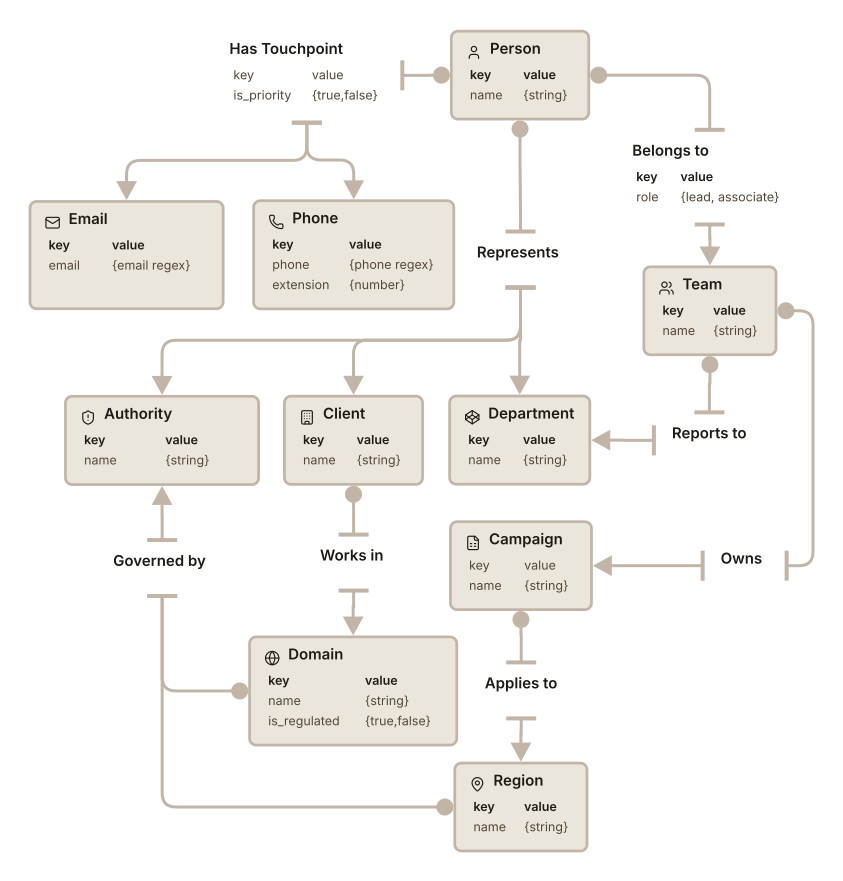
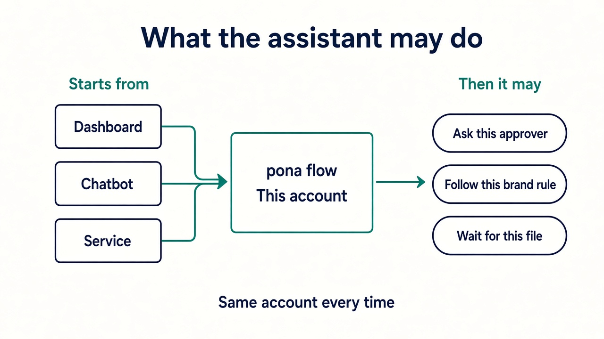

Answering is cheap
A bot that drafts from the knowledge base is a prompt and a folder, but it is incapable of taking deliberate action.
...and worse yet, your context is informal. It lives in prose: a brief, a thread, a note. Not in a place the agent can deterministically act from, and so you run into the same headaches over and over again.
A bot that drafts from the knowledge base is a prompt and a folder, but it is incapable of taking deliberate action.
Send, file, book: someone still has to be there to manually tell the agent what to do next and too often, how to do it.
Dependencies, approvals, notifications: those live in a zap or in code. You can see them but cannot easily edit them.
Your agent has access to your documentation, your records, and the services you use, but it doesn’t understand the bigger picture of how it all fits together. This is where Pona flow comes in.
Pona flow provides a graph-based map of your agency that explicitly declares the context surrounding your working environment, your records, and your workflows. This gives the agent a holistic view of your agency that reflects your implicit knowledge and the tools to act on it.
Mapping your environment is essential. Here we describe not your data, but its shape. This is not a flowchart you keep for reference. It is an explicit, bounded environment your agent can act in and take meaning from.
Here is a small slice of that map, in relation to a campaign approval workflow. It shows the types involved, the properties of those types, and the connections between them.
We’ll assume an ad campaign proposal that is:
The proposal needs approval from a department manager, an account manager, a domain specialist, a regional authority representative for each region, and the client’s primary point of contact.

This is a graph database, and represents a fundemental transformation in data architecture that is better equipped for complex, relationally dynamic systems than a traditional database. Unlike a traditional system, the value compounds as complexity increases, and is ideal for agentic orchestration as it provides a traceable path for contextualizing data.
The process is the walk, not a SOP in Notion plus a zap. We do not map the whole agency. We map what one routine touches.
The types this approval uses, how they connect, and which fields matter. Person, team, department, domain, region, authority, client. Not the whole org. What this proposal touches.
Then the records that fill those types, and the workflow as a chain that reads them, branches, and pauses for a person.
A button on a dashboard, an assistant with the same routine as a tool, or an API call from something you already have.

For
Agency owners and ops leads whose week is still kickoff / revision / approval / publish from memory, and who have already tried letting an assistant take a step.
Not for
A hundred SaaS connectors and no domain model (keep the glue tool). An agent you are still inventing (a notebook is cheaper).
You describe what repeats, what waits on what, and where a human still has to step in. No platform tour.
Talk about a routineReplace the mailto in index.html when you have a real inbox.
2-minute pitch
Script lives in the product repo as Docs/video/AGENCY-PITCH.md.
Drop agency-pitch.mp4 next to this page when you want the cut to play here.